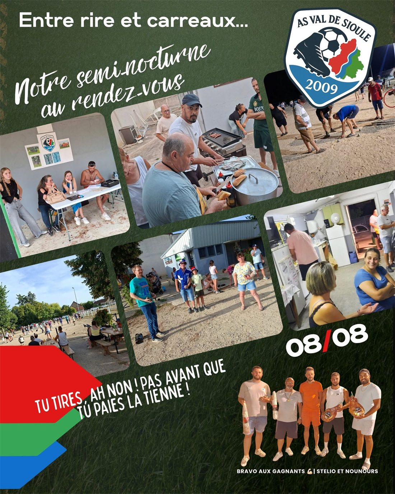

Accueil/Événements
Le foot, c'est aussi hors du terrainÉvénements & vie du club
Un club de village vit de ses manifestations. Voici les rendez-vous qui rythment notre saison — et qui financent les maillots, les ballons et les déplacements.
Nos rendez-vous
Les dates précises sont annoncées sur la page Facebook du club au fil de la saison.
54 équipes : un record
Le samedi 8 août 2026, le club organisait son traditionnel concours de pétanque, proposé pour la première fois en semi-nocturne pour profiter d'un peu de fraîcheur.
Entre beaux carreaux, tirs manqués, parties disputées et éclats de rire, 54 équipes se sont affrontées dans une ambiance conviviale et festive. Un nouveau record pour l'ASVS.
Félicitations aux finalistes Stelio et Nounours, et un immense merci aux bénévoles mobilisés à la buvette, à la restauration et à la table de marque.

Affiches & règlements
Donner un coup de main ?
Tenir la buvette, cuire les saucisses, tracer le terrain, tenir la table de marque, conduire le minibus : chaque manifestation repose sur les bénévoles. Deux heures suffisent.